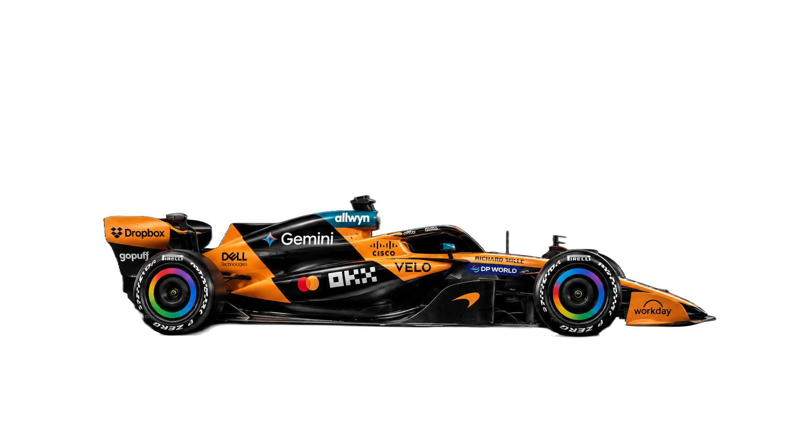
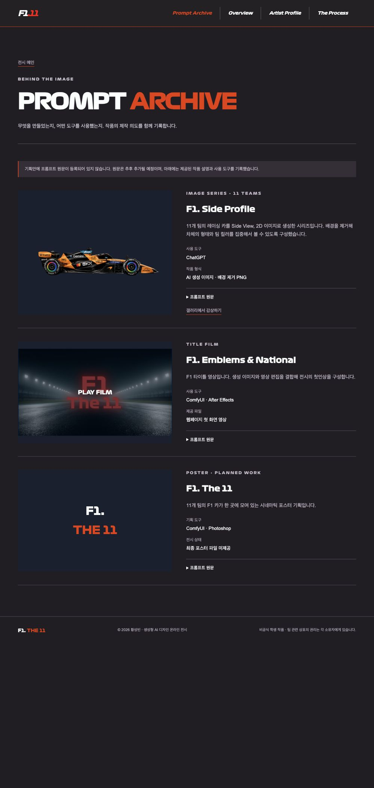
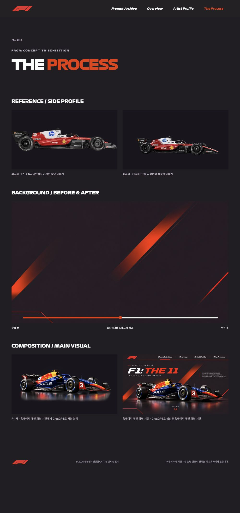
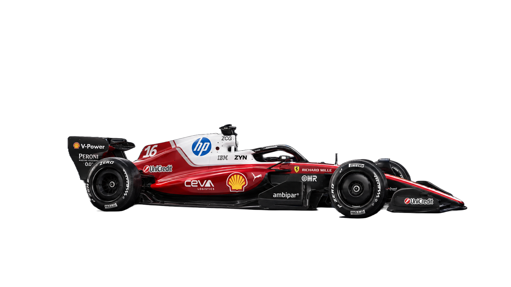
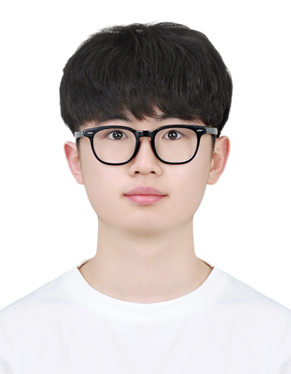

IMAGE SERIES · 11 TEAMS
F1: Side Profile
11개 팀의 레이싱 카를 Side View, 2D 이미지로 생성한 시리즈입니다. 배경을 제거해 차체의 형태와 팀 컬러를 집중해서 볼 수 있도록 구성했습니다.
- 사용 도구
- ChatGPT
- 작품 형식
- AI 생성 이미지 · 배경 제거 PNG
F1: THE 11 · OPENING FILM
F1 ONLINE EXHIBITION
11 TEAMS, 1 CHAMPIONSHIP
EXPLORE THE 11 F1 TEAMS
THROUGH THEIR PHILOSOPHY
AND ICONIC COLORS.

황성빈 · VFX콘텐츠전공
F1: SIDE PROFILE
하나의 그리드, 열한 가지 정체성.
팀을 선택해 각 레이싱 카의 컬러와 디테일을 감상하세요.
MOTION WORK
팀의 정체성을 이미지에서 움직임으로.
F1의 세계로 들어가는 전시 오프닝 타이틀 영상입니다.
EXHIBITION OVERVIEW
F1을 빛내는 11개 팀의 개성을 생성형 AI의 시선으로 재해석합니다.
속도 뒤에 존재하는
팀의 철학과 컬러,
그리고 레이싱의 미학.
〈F1: The 11〉은 F1을 챙겨보는 팬을 위한 온라인 전시입니다. 서로 다른 철학과 다채로운 팀 컬러를 가진 11개 팀을 하나의 그리드 위에서 만납니다.
생성형 AI로 제작한 사이드 프로필 이미지는 같은 구도 안에서 각 팀의 시각적 정체성을 드러냅니다. 시네마틱 이미지와 오프닝 영상은 레이싱의 에너지를 웹 화면으로 확장합니다.
갤러리에서는 팀별 작품을, 프롬프트 아카이브와 제작 과정에서는 이미지와 영상이 완성되는 흐름을 살펴볼 수 있습니다.
11개 팀 관람하기BEFORE / AFTER
페이지를 선택하면 실제 화면을 나란히 비교할 수 있습니다. 긴 사진은 사진 안에서 스크롤하고, 크게 보기로 같은 화면에서 확대하세요.






BEHIND THE IMAGE
무엇을 만들었는지, 어떤 도구를 사용했는지. 작품의 제작 의도를 함께 기록합니다.

IMAGE SERIES · 11 TEAMS
11개 팀의 레이싱 카를 Side View, 2D 이미지로 생성한 시리즈입니다. 배경을 제거해 차체의 형태와 팀 컬러를 집중해서 볼 수 있도록 구성했습니다.
TITLE FILM
F1 타이틀 영상입니다. 생성 이미지와 영상 편집을 결합해 전시의 첫인상을 구성합니다.

CINEMATIC POSTER
빗속의 서킷, 조명과 속도감 속에서 11개 팀의 레이싱 카가 만나는 시네마틱 포스터입니다.
FROM CONCEPT TO EXHIBITION




THE CREATOR

HWANG SUNG BIN
한국영상대학교 · VFX콘텐츠전공
본 전시는 F1을 빛내는 11개 팀의 고유한 철학, 시즌 성적, 그리고 다채로운 팀 컬러를 깊이 있게 조명합니다.
생성형 AI 기술을 활용해 각 팀의 개성을 담은 독창적인 이미지와 영상을 구현하고, 이를 몰입감 있는 웹페이지로 선보입니다.
작품 관람하기